COZ: Finding Code that Counts with Causal Profiling
This page was written by an AI model to give a high-level overview of the paper. Please check the paper for detail: ACM Digital Library.
Developers find optimization targets with profilers such as gprof, oprofile, and perf, which rank code by how much time it consumes. That ranking is only useful if time spent and performance impact are the same thing, and often they are not. In the two-thread example of Figure 1, functions fa and fb each run for roughly half of the program's total time, so a conventional profiler reports them as comparably important. But fa finishes before fb, so eliminating it entirely improves overall performance by at most 4.5%, and eliminating fb has no effect at all, since fa simply becomes the new bottleneck. A profiler that treats fa and fb as equally worth optimizing is actively misleading the developer.
This mismatch is not limited to toy examples or to code that waits on I/O. Past attempts to go beyond raw time, such as critical-path profilers (IPS, IPS-2) and bottleneck metrics like slack and logical zeroing, get closer by asking what happens if a procedure's time is removed, but they require a complete program activity graph, which is expensive to collect and is still a passive measurement rather than a controlled experiment. None of these approaches directly answers the question a developer actually has: if I make this specific line of code X% faster, how much faster does the whole program get?
COZ's answer is causal profiling: run real performance experiments inside the live, unmodified, already-running program. Each experiment virtually speeds up one line of code by a chosen percentage. A virtual speedup is produced by pausing every other concurrently running thread for a proportional amount of time whenever the target line executes. The key insight is that this slowdown of everything else has exactly the same relative effect on the target line's apparent progress as if that line itself had been made faster, which lets the profiler observe the counterfactual effect of an optimization without performing it.
COZ implements this with sampling rather than instrumentation. It samples each thread's program counter via Linux's perf_event API and maps samples to source lines using DWARF debug information. Each experiment randomly selects an in-scope line that is currently executing and a random target speedup, from 0% to 100% in 5% steps; whenever a sample lands on the chosen line, the profiler inserts proportional delays into every other thread. Developers mark units of work with progress points; COZ measures the rate of visits to these points to compute the resulting change in throughput, or, using two progress points and Little's Law, the change in latency. Combining many experiments across many lines and speedup amounts produces a causal profile: a plot, per candidate line, of hypothetical line speedup against resulting program speedup.
The authors built COZ to profile unmodified Linux x86-64 binaries and applied it to Memcached, SQLite, and the PARSEC benchmark suite. Guided by its output, they improved Memcached's throughput by 9.39%, SQLite by 25.60%, and six PARSEC applications by as much as 68.4% (streamcluster), most fixes touching fewer than 10 lines of code. In the two cases where the effect of a fix on the identified line could be measured directly (ferret and dedup), COZ's predicted program speedup matched the observed speedup to within half a percentage point. Mean profiling overhead across the PARSEC suite was 17.6% (0.1% to 65%), compared to up to 6x overhead for gprof on the same workloads.
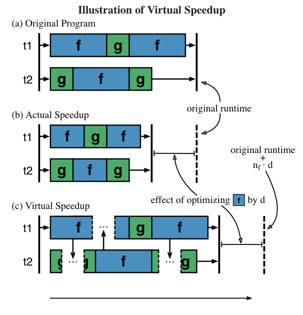
Key takeaways
- Time-based profilers (gprof, oprofile, perf) report where a program spends its time, not what would happen if that code ran faster; the two can diverge sharply, especially with concurrency.
- Virtual speedup: every time a sampled instruction falls in a chosen line, COZ pauses all other threads proportionally. This has the same relative effect as if the chosen line itself ran faster, without any real optimization.
- Progress points mark units of work in the source; their visit rate gives throughput, and two progress points combined with Little's Law give latency.
- COZ profiles unmodified, unrecompiled binaries, picking lines and speedup amounts randomly each experiment to avoid systematic bias in the resulting profile.
- Guided by COZ, the authors improved Memcached by 9.39%, SQLite by 25.60%, and PARSEC applications by up to 68.4%, usually with under 10 lines changed, at a mean profiling overhead of 17.6%.
From a misleading time profile to a causal one
Why time spent is the wrong signal, how virtual speedup works, how experiments stay correct under blocking and phases, and how COZ is built.
1 · Why time-based profiling is the wrong signal
Conventional profilers report a program's time spent per function or line and let the developer infer importance. Figure 1's program spawns two threads running functions a() (about 6.7 seconds) and b() (about 6.4 seconds) and joins both. A gprof profile of this program reports a() and b() as taking 55.2% and 45.19% of runtime respectively, suggesting both are worth optimizing. In fact, because the program's total runtime is the maximum of the two thread durations, optimizing a() away entirely improves performance by at most 4.5%, and optimizing b() away has no effect at all once a() remains the bottleneck.
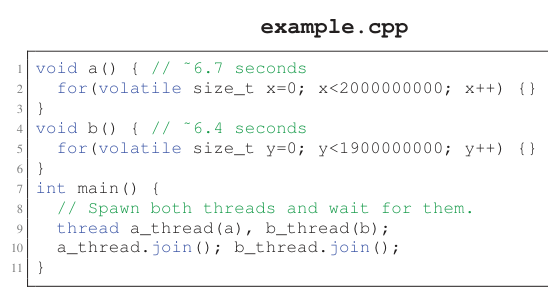
A causal profile of the same program looks very different. Plotting hypothetical line speedup against resulting program speedup, line 2 (inside a()) rises to at most about 4.5% program speedup as its own speedup approaches 100%, while line 5 (inside b()) stays flat at 0% regardless of how much it is sped up.
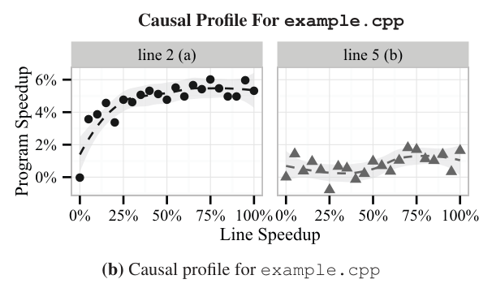
2 · Virtual speedup: the core mechanism
If a function f normally runs for time t̄f and is actually optimized to run in t̄f − d, a program that calls f will finish faster. COZ reproduces this effect without touching f's code: every time f runs, it pauses every other thread in the program for time d. The total runtime with these pauses equals the runtime that would result if f's real duration were t̄f − d, minus the inserted pause time (n·d, where n is the number of times f ran). Subtracting that known pause time from the measured runtime recovers exactly the runtime that an actual optimization of size d would have produced.
- Select a line of code to virtually speed up and a target percentage.
- Whenever any thread executes that line, pause every other running thread proportionally.
- Measure the resulting progress rate, with the known pause time subtracted out.
- The measured change in progress rate is the change a real optimization of that size would have produced.
3 · Implementing virtual speedup without instrumentation
Pausing threads on every execution of a line would require instrumenting that line and would add prohibitive overhead on hot lines. COZ instead samples: it periodically samples each thread's program counter and inserts delays only when a sample happens to land in the selected line. If a line runs n times with average duration t̄ and is sampled with period P, the expected number of samples in that line is s ≈ n·t̄/P. Each sampled execution is delayed by d, while un-sampled executions run at the normal duration, giving an effective average duration of
so the achieved virtual speedup is Δt̄ = d/P. Delaying a sampled execution by one quarter of the sampling period virtually speeds up that line by 25%, with no need to instrument every occurrence of the line.
4 · Progress points: throughput and latency
A progress point marks a unit of work completing, such as a finished transaction or rendered page. COZ supports three kinds: source-level points, inserted with a COZ_PROGRESS macro in the program's source; breakpoint points, set from the command line using perf_event breakpoints on a given source line with no code changes; and sampled points, which estimate visit rate from the fraction of samples falling on a given line rather than an exact count.
- For throughput, COZ tracks the rate of visits to a single progress point under each experiment's virtual speedup.
- For latency, the developer marks the start and end of an operation with two progress points. The arrival rate λ and the number of requests currently in progress L are measured directly; Little's Law, L = λW, which holds for any stable queuing system, gives average latency W = L/λ.
Throughput is the only metric used in the paper's evaluation; latency profiling is supported but not exercised there for space reasons. See the Evaluation tab for results.
5 · Running and ending a performance experiment
- A dedicated profiler thread waits for any program thread to sample an in-scope source line; the first such line becomes the experiment's target.
- A target virtual speedup is chosen randomly in 5% increments from 0% to 100%. A speedup of 0% (a baseline measurement) is chosen with 50% probability, since every line needs a baseline to compute a percent change against; the rest is split evenly across the nonzero values.
- The profiler records all progress-point counters, then lets the experiment run for a fixed duration.
- If fewer than five progress-point visits occurred (the default minimum), COZ doubles the experiment duration for the rest of the run, so slow-progress programs still get usable measurements.
- At the end, the profiler logs the experiment's effective duration (real time minus inserted delay), the chosen line and speedup, and the progress-point counts, then pauses briefly (a cooloff period) before starting the next experiment.
6 · Correctness under blocking and synchronization
Delays accumulate in a thread's local counter while it runs, including while it is blocked on I/O, which is correct: a thread already waiting does not need an extra pause. But a thread waiting on a mutex or condition variable is different, because another thread's actions determine when it resumes. COZ's rule: a resumed thread should be credited for delays already executed by the thread that woke it, rather than inserting those delays again after waking. To enforce this, COZ forces a thread to execute all of its own pending delays before calling any function that could wake another thread.
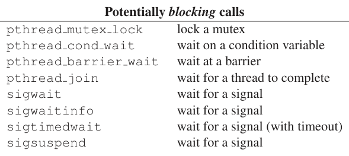
| Potentially blocking call | What it waits for |
|---|---|
| pthread_mutex_lock | a mutex |
| pthread_cond_wait | a condition variable |
| pthread_barrier_wait | a barrier |
| pthread_join | another thread's completion |
| sigwait, sigwaitinfo, sigtimedwait, sigsuspend | a signal |
COZ intercepts both sets of POSIX calls (the unblocking calls of Table 1 and the blocking calls above, the paper's Table 2) to update delay counts at exactly the right moment. Programs using ad hoc synchronization that never suspends a thread need no special handling at all.
7 · Correcting for program phases
COZ only selects lines that are currently executing, which is efficient but can bias programs that run in distinct phases: a line's impact could be understated if experiments only sample it while it has little effect, or overstated if its few sampled windows happen to be unrepresentative. COZ corrects for this by splitting execution into phase A (the line runs) and phase B (it does not), measuring the speedup effect ΔpA only within phase A, and then scaling it by the fraction of total runtime attributable to phase A, estimated from the fraction of samples that fell in the selected line:
where s is the total samples in the selected line, sobs and tobs are the samples and duration observed during the experiment, and T is total runtime. COZ applies this correction factor to every measured speedup before reporting it.
8 · From experiments to a causal profile
- Experiments sharing the same line and speedup are combined by summing their progress-point visits and effective durations.
- Experiments are grouped by line. Any line without a 0% (baseline) measurement is discarded, since there is no reference point to compute a percent change against.
- Lines with fewer than five distinct measured speedup amounts are discarded by default, since a sparse plot is not informative.
- For each remaining line, COZ computes percent program speedup at each measured virtual speedup, relative to the 0% baseline, and plots the resulting curve.
- Lines are ranked by the slope of a linear regression through their curve: a steep upward slope marks a good optimization target, a flat line marks one with no effect, and a steep downward slope is a signature of contention, where speeding up that code would increase interference on the program's true bottleneck and slow the program down.
9 · Implementation: profiling an unmodified binary
- Running
coz run --- <program> <args>injects COZ's runtime via LD_PRELOAD; no recompilation of the target is required, though -g debug information must be available (COZ can locate it externally the way GDB does). - At startup COZ builds a map from instruction addresses to source lines using DWARF debug information, restricted to any file and binary scope the user specifies, so a developer can confine candidate optimizations to code they are willing to change.
- COZ interposes on pthread_create to start perf_event sampling in each new thread and to inherit the parent thread's pending delay count.
- Samples are collected every 1ms by default and processed in batches of 10 (roughly every 10ms), with a 10ms cooloff after each experiment, trading profiling speed for lower overhead.
- Samples outside the profiled scope (for example, inside printf) are attributed to the last in-scope call site on the sampled call stack, so library time is charged to the caller that invoked it.
Results from applying this implementation to real applications are covered in the Evaluation tab.
Evaluation
Case studies on real applications, accuracy checks against directly measurable effects, and profiling overhead.
The authors ask whether causal profiling enables effective performance tuning, whether its predictions are accurate, and whether its overhead is low enough for practical use. All experiments ran on one machine, profiling Memcached, SQLite, and the PARSEC suite; only throughput (not latency) is evaluated.
| What | Value in the paper |
|---|---|
| Platform | 64-core, 4-socket AMD Opteron, 60GB RAM, unmodified Linux 3.14 |
| Build | GCC 4.9.1, -O3, -g debug info, -fno-omit-frame-pointer (for accurate call stacks) |
| COZ configuration | 1ms sampling period, samples processed in batches of 10, 10ms cooloff after each experiment |
| Workloads | Memcached (50-client SET/GET benchmark, 100,000 requests), SQLite (write-intensive parallel insert benchmark), 13 PARSEC benchmarks with native inputs (streamcluster used test inputs for excessive native runtime) |
| Baselines | gprof, perf, and an un-profiled baseline for overhead measurement |
| Metrics | percent program speedup (bootstrap standard error, Mann-Whitney U significance), percent profiling overhead decomposed into startup, sampling, and delay |
Every COZ-guided fix improved its target, most with tiny diffs
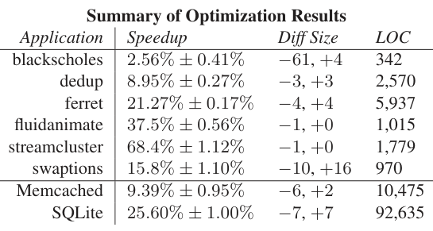
What it shows. The table lists, for all eight optimized targets, the measured speedup with bootstrap standard error, the size of the code change (lines removed/added), and the target's total lines of code. Speedups range from 2.56% ± 0.41% (blackscholes) to 68.4% ± 1.12% (streamcluster), with dedup 8.95% ± 0.27%, ferret 21.27% ± 0.17%, fluidanimate 37.5% ± 0.56%, swaptions 15.8% ± 1.10%, Memcached 9.39% ± 0.95%, and SQLite 25.60% ± 1.00%. Diffs are small, down to a single line removed for fluidanimate and streamcluster. Every result is significant at α = 0.001 by a one-tailed Mann-Whitney U test, run ten times before and after each optimization.
What to take from it. COZ's output led directly to a usable fix in every case the authors pursued, and the fixes themselves were minimal, not large rewrites. This is evidence that causal profiling locates precisely targeted opportunities rather than vague hot regions.
dedup: a near-unused hash table, invisible to gprof
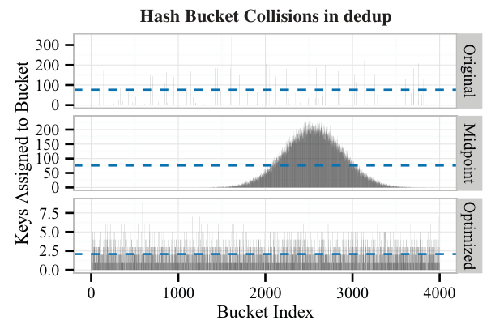
What it shows. The plots show hash bucket collision counts before, midway through, and after optimizing dedup's hash function (note the differing y-axis scales). The dashed line marks average collisions per utilized bucket. COZ pointed to the top of the linked-list traversal in hashtable_search (hashtable.c:217). The original hash function used just 2.3% of available buckets; removing a bit-shifting step raised utilization to 54.4%, and switching to an XOR-based hash raised it to 82.0%, giving an 8.95% ± 0.27% speedup from a 3-line change.
What to take from it. gprof's flat profile put hashtable_search at 14.38% of total time overall, but calls to it from the hash-computation stage specifically, where the fix mattered, were just 0.48%; gprof's call graph obscured the opportunity entirely. COZ's accuracy was also checked directly: reducing the average bucket chain length from 76.7 to 2.09 entries corresponds to a 96% speedup of the identified line, for which COZ had predicted a 9% program speedup, within 0.05 points of the observed 8.95%.
ferret: reallocating threads across pipeline stages
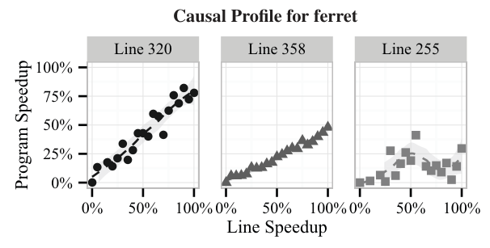
What it shows. The causal profile plots the three highest-impact lines in ferret's unmodified pipeline: two calls to cass_table_query in the indexing and ranking stages (lines 320 and 358) and one call to image_segment in the segmentation stage (line 255), each with program speedup rising as virtual line speedup increases toward 100%. No line in the shared feature-extraction stage or in the inter-stage queues showed any effect.
What to take from it. Because each important line sat in a different pipeline stage, the authors reallocated ferret's 64 worker threads across stages (from an even 16/16/16/16 split to 20 segmentation, 1 feature extraction, 22 indexing, 21 ranking), a four-line change, for a 21.27% ± 0.17% speedup with the same total thread count. This was a direct accuracy check too: increasing indexing throughput by 27% via the thread shift, COZ had predicted a 21.4% program speedup, matching the observed 21.27%. gprof's output was nearly unchanged before and after the fix, despite the large real performance change.
SQLite: indirect calls that perf said were irrelevant
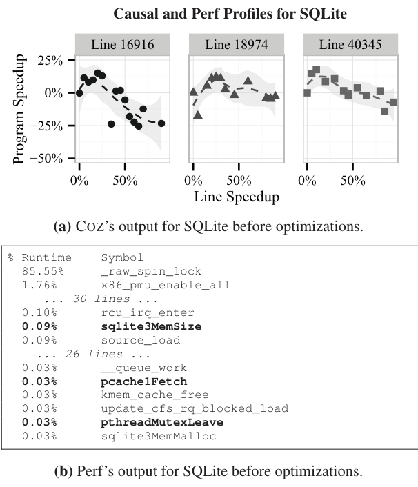
What it shows. COZ's causal profile for unoptimized SQLite highlights three lines: the function prologues of sqlite3MemSize, pthreadMutexLeave, and pcache1Fetch, each reached through a function-pointer indirection set at startup to a fixed, compile-time-determined implementation. A small virtual speedup to any of the three improves throughput, though COZ predicts the benefit reverses into a slowdown beyond about a 25% speedup on some of them. perf's flat profile, shown alongside, ranks these same three functions far down the list, together accounting for just 0.15% of total runtime.
What to take from it. Replacing the indirect calls with direct calls (gprof itself crashes on SQLite and could not be used) gave a 25.60% ± 1.00% speedup from changing seven lines. perf's own number, 0.15% of runtime, would have told a developer these functions were not worth touching; causal profiling showed the opposite.
fluidanimate and streamcluster: a barrier that COZ says to make slower
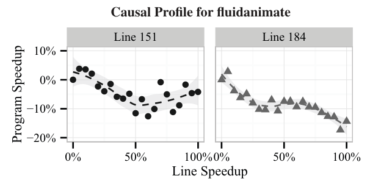
What it shows. For fluidanimate, the causal profile shows two lines in a custom barrier implementation (parsec_barrier.cpp) with a negative slope: as virtual speedup of either line increases, program throughput falls, dropping by roughly 10 to 20% at the plotted speedups. Both lines precede a spin loop calling pthread_mutex_trylock on a contended mutex.
What to take from it. A downward-sloping profile is COZ's signature for contention: speeding up code that spins for a contended lock only tightens that spin loop and increases interference with the real bottleneck. Replacing the custom barrier with the standard pthread_barrier, a one-line change, sped up fluidanimate by 37.5% ± 0.56%. The identical custom barrier was the cause of streamcluster's main bottleneck; fixing it the same way, plus a minor swap of the random-number generator (about 2% on its own), gave streamcluster a 68.4% ± 1.12% speedup, the largest in the paper.
COZ finds opportunities across the rest of PARSEC, pursued or not
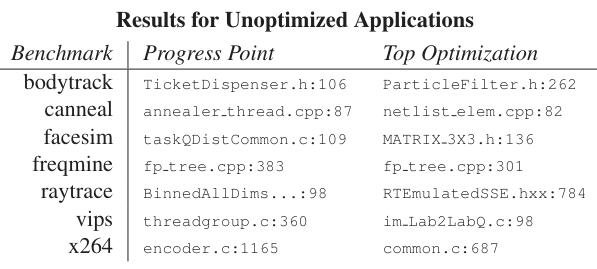
What it shows. For the seven remaining PARSEC benchmarks (bodytrack, canneal, facesim, freqmine, raytrace, vips, x264), the table lists where a progress point was inserted and the single top optimization opportunity COZ identified for each, for example ParticleFilter.h:262 in bodytrack and RTEmulatedSSE.hxx:784 in raytrace.
What to take from it. COZ found actionable candidates in every PARSEC benchmark tested, not just the six carried through to a full fix; the authors describe the remaining opportunities as requiring more invasive changes that were out of scope for the paper, and state they submitted patches for all applications they did optimize. This result shows breadth of applicability more than depth.
Profiling overhead averages 17.6%, well under gprof's
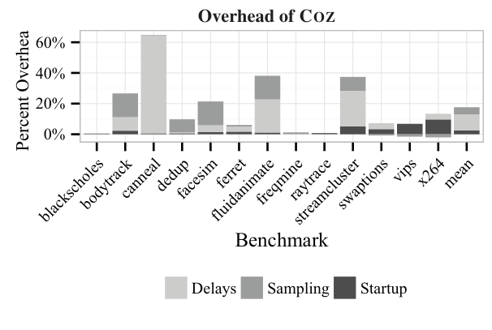
What it shows. For each PARSEC benchmark, overhead is broken into three measured sources: startup (processing debug information), sampling (collecting and attributing samples), and delays (pauses inserted for virtual speedups). Mean overhead across the suite is 17.6% (startup 2.6%, sampling 4.8%, delays 10.2% on average), ranging from 0.1% to 65% across individual benchmarks; sampling overhead is even slightly negative (a small speedup) for swaptions, vips, and x264. This decomposition came from running each benchmark in four configurations: unprofiled, COZ-with-immediate-exit, COZ-sampling-only, and COZ-fully-enabled.
What to take from it. Delays dominate COZ's overhead, and could be reduced by spacing experiments further apart at the cost of longer profiling runs. The paper's comparison point is gprof's overhead on ferret, 6x, against COZ's 6% on the same benchmark, offered as evidence that COZ is efficient enough for regular use, not just one-off diagnosis.
FAQ
Q·What is causal profiling, in one sentence?▾
An approach that runs controlled experiments inside a live program to directly measure how much a hypothetical optimization of a specific line would change throughput or latency, rather than only reporting how much time that line consumes.
Q·How can pausing other threads simulate speeding up a line?▾
If a line were actually made d time units faster, the program would finish that much sooner each time it ran. Pausing every other thread for d time units whenever that line executes produces the same net effect on relative progress, because the extra pause time is known exactly and can be subtracted back out of the measured runtime. The paper proves this equivalence algebraically (Section 3.4).
Q·Does COZ actually insert a pause on every single execution of a line?▾
No. That would require instrumenting the line and would add large overhead to hot code. COZ instead samples the program counter periodically and inserts a delay only when a sample happens to land on the selected line, then scales the delay so the sampled fraction produces the intended average virtual speedup across all executions of the line.
Q·Why do you need progress points; isn't wall-clock time enough?▾
Wall-clock time for the whole run is a poor metric for servers and interactive programs, whose important quantities are throughput (requests per second) and latency (time per request), not total runtime. Progress points mark completed units of work so COZ can measure how fast those units complete under each virtual speedup.
Q·How does COZ measure latency rather than just throughput?▾
With two progress points, one at the start and one at the end of an operation. The start point's visit rate gives the arrival rate λ, and the gap between the two points' counts gives the number of in-flight operations L. Little's Law, L = λW, which holds for any stable queuing system, then gives the average latency W = L/λ. This is described but not used in the paper's own evaluation, which profiles only throughput.
Q·Why select lines and speedup amounts randomly instead of, say, starting small and increasing?▾
Any systematic exploration strategy risks biasing the profile. A line whose impact only appears after a warmup period would be under-measured if early small speedups found no effect and the search moved on; a line whose impact is concentrated early in execution would be over-measured if later re-tests were skipped. Random selection avoids both failure modes.
Q·What happens if a thread is blocked on a mutex when it is supposed to be paused?▾
COZ forces a thread to execute any pending delays before it calls a function that could wake another thread (unlock, signal, broadcast, and similar). A thread that resumes because another thread woke it is credited with any delays that waking thread already executed, so it does not pause again unnecessarily. COZ intercepts the relevant POSIX functions to apply this rule correctly.
Q·What does a downward-sloping causal profile mean?▾
It means optimizing that line would make the program slower, not faster. This is the paper's signature for contention: the line usually spins or holds a lock that interferes with the program's actual bottleneck, and speeding it up only lets it interfere more. The paper identifies this pattern in fluidanimate, streamcluster, and Memcached.
Q·Does using COZ require recompiling or modifying the target program?▾
No, beyond adding progress points (which for breakpoint or sampled points requires no source changes at all). COZ attaches via LD_PRELOAD and reads debug information already present or externally available for the binary; it profiles unmodified Linux x86-64 executables.
Q·How accurate are COZ's predictions, really?▾
In the two cases where the paper could independently measure the real effect on the identified line, COZ's predicted program speedup was within about 0.15 to 0.5 percentage points of the observed result: 21.4% predicted versus 21.27% observed for ferret, and 9% predicted versus 8.95% observed for dedup.
Q·How much does COZ slow the program down while profiling?▾
17.6% on average across the PARSEC suite (range 0.1% to 65%), split roughly into 2.6% startup cost, 4.8% sampling cost, and 10.2% from the inserted virtual-speedup delays. By comparison, the paper reports gprof's overhead on ferret at 6x versus COZ's 6% on the same benchmark.
Q·How is this different from critical-path profilers or lock-contention tools?▾
Critical-path profilers and metrics like slack or logical zeroing identify code on the program's critical path or estimate the effect of removing it entirely, using a static activity graph. Lock-contention tools find contended locks specifically. Causal profiling instead runs a live experiment for any degree of speedup on any line, whatever the underlying cause (lock contention, cache effects, scheduling, I/O), and reports a continuous curve of program impact rather than a single removal estimate.
Q·Does causal profiling make sense for single-threaded programs?▾
The mechanism (pausing "all other threads") has nothing to pause if there is only one thread, so a single-threaded program's causal profile would reduce to ordinary time-based attribution. The paper's examples and all of its case studies are multithreaded or multiprocess server and benchmark workloads, where the mismatch between time spent and performance impact is largest.